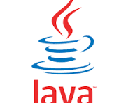

<dl>
  <dt>Java</dt>
  <dd>
    Java is a high-level, general-purpose, memory-safe, object-oriented
    programming language. It is intended to let programmers write once, run
    anywhere (WORA),[18] meaning that compiled Java code can run on all
    platforms that support Java without the need to recompile.[19] Java
    applications are typically compiled to bytecode that can run on any Java
    virtual machine (JVM) regardless of the underlying computer architecture.
    The syntax of Java is similar to C and C++, but has fewer low-level
    facilities than either of them. The Java runtime provides dynamic
    capabilities (such as reflection and runtime code modification) that are
    typically not available in traditional compiled languages. Java gained
    popularity shortly after its release, and has been a popular programming
    language since then.[20] Java was the third most popular programming
    language in 2022 according to GitHub.[21] Although still widely popular,
    there has been a gradual decline in use of Java in recent years with other
    languages using JVM gaining
  </dd>
</dl>
